Buka file explorer Cari file iso yang anda punya Pastikan file benar-benar berfotmat iso, kalau sudah dipastikan filenya benar-benar iso dan tidak kebaca seperti pada gambar di bawah ini, ikuti langkah selanjutnya.
img src="tr1-png/tr1.png" alt="fileiso">
Close saja semua windows, Lalau tekan di keyboard Windows + R, lalu ketikkan control, klik ok.
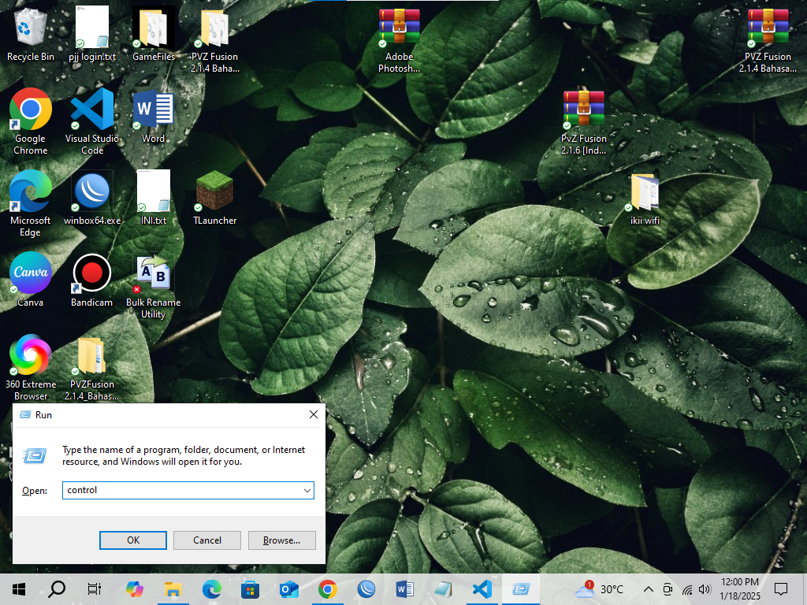
pilih yang Programs
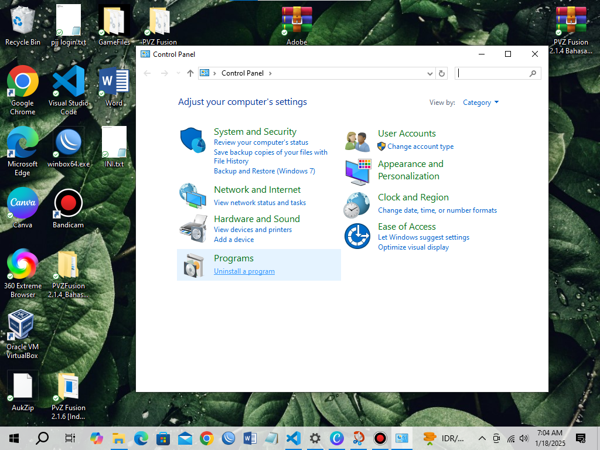
Pilih yang Programs and Features
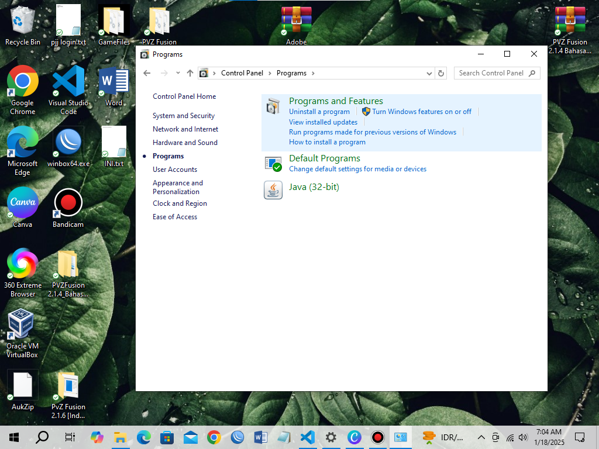
Cari Winrar pada daftar aplikasi. Klik kanan, klik Uninstal, Pilih Yes.
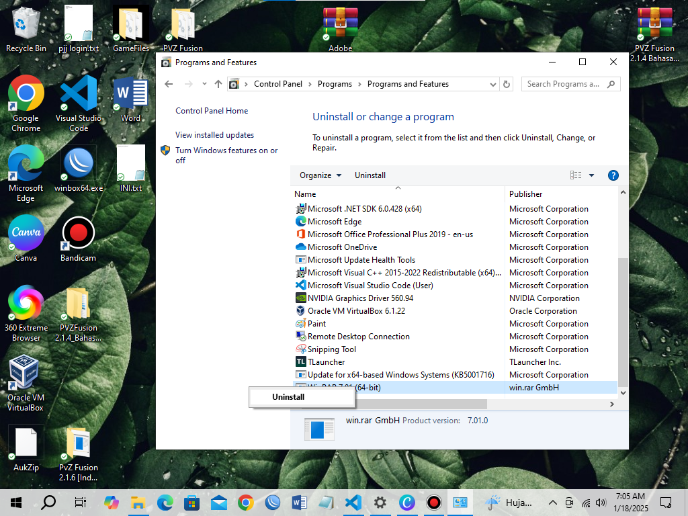
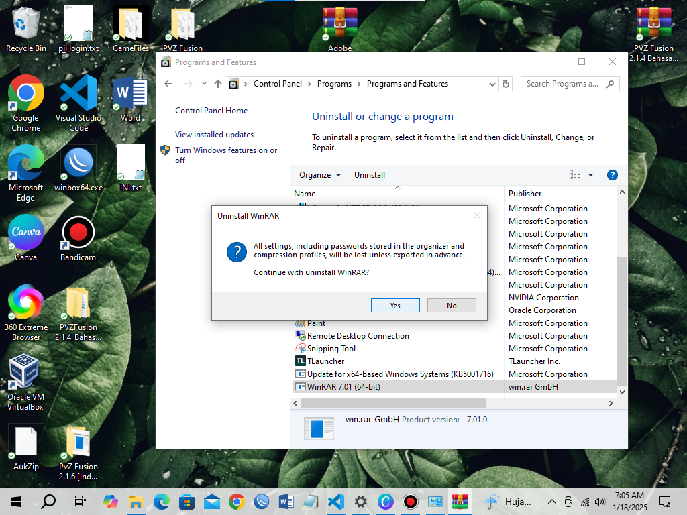
Close lagi semua windows, Tekan di keyboard Windows + R, lalu ketikkan regedit, klik ok. Lalu pilih yes.
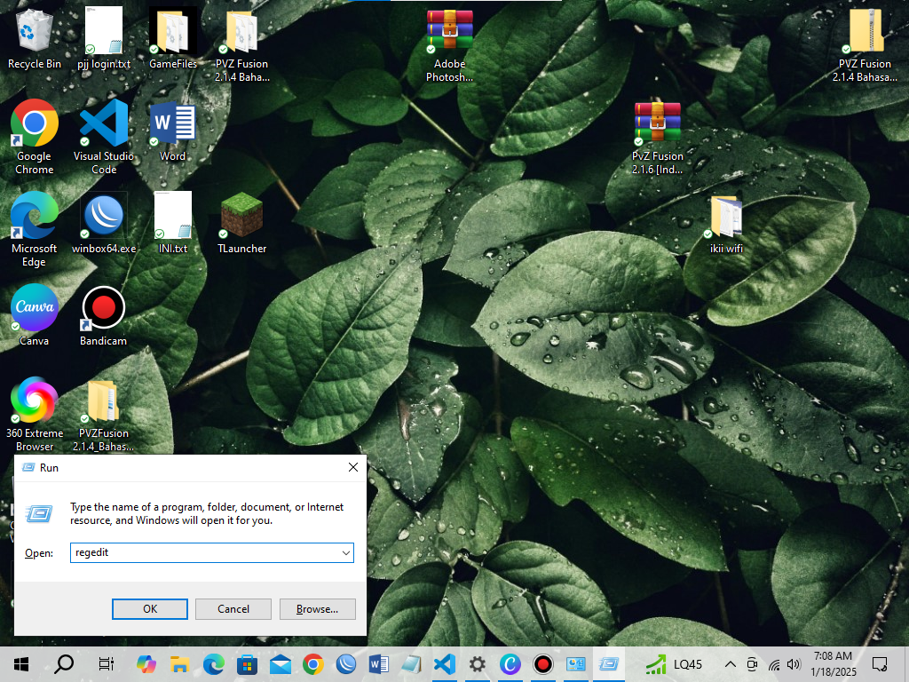
Pergi ke lokasi:
◉ HKEY_CURRENT_USER\Software\WinRAR
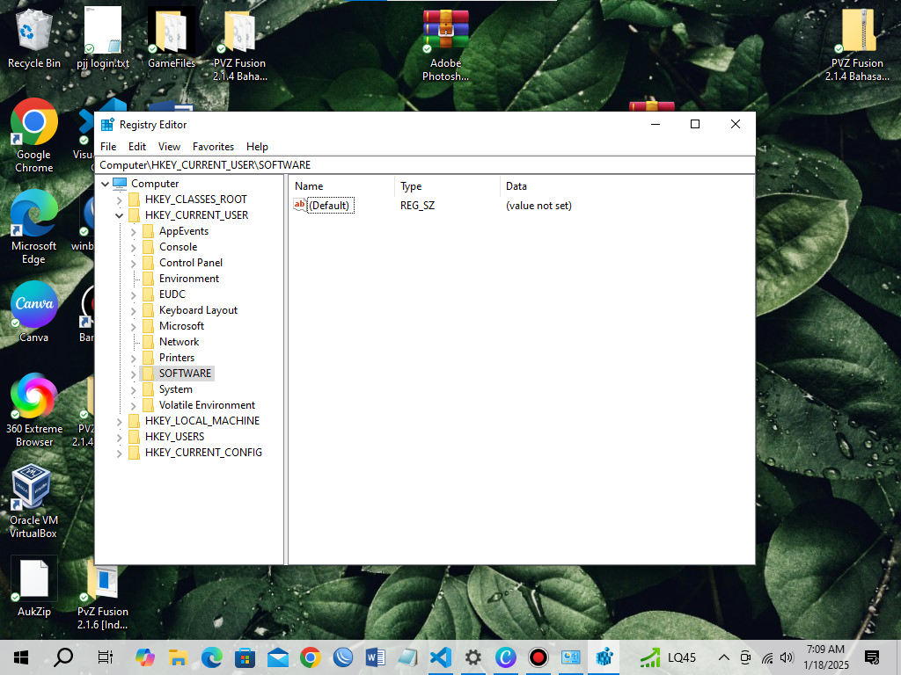
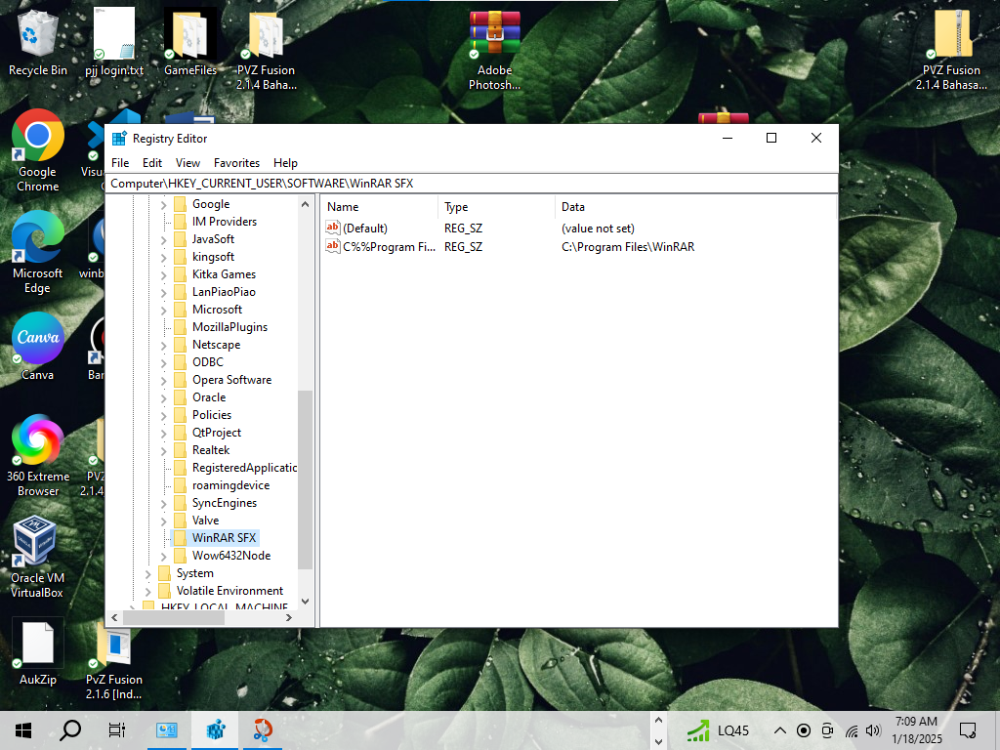
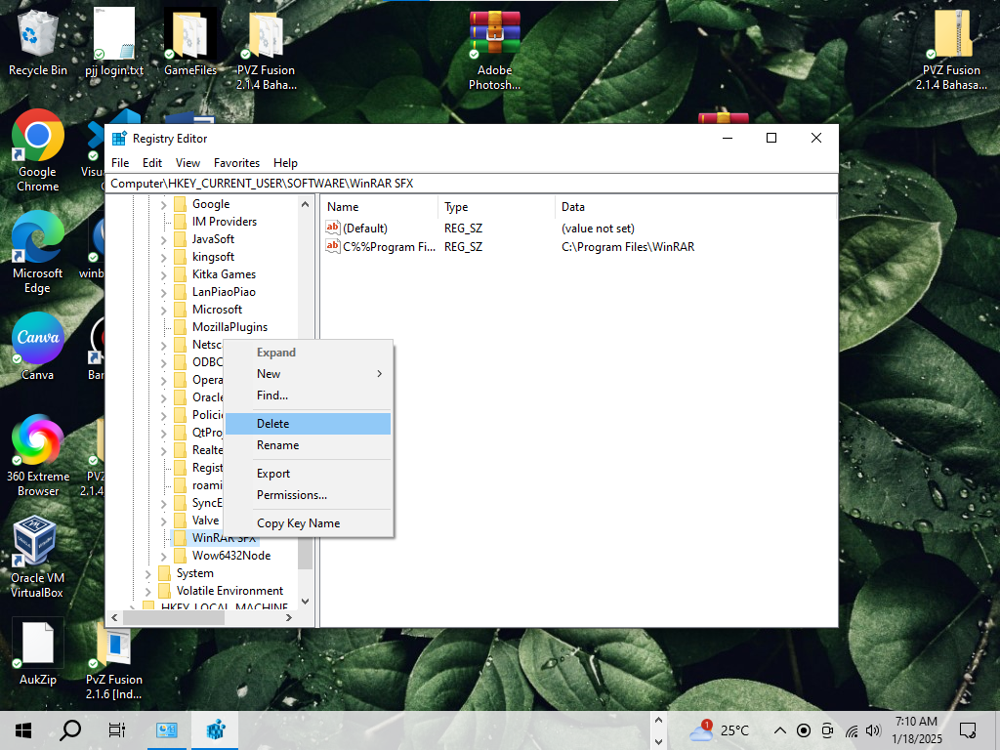
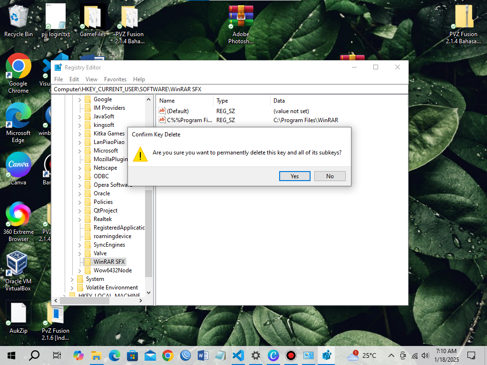
Lalu pergi ke:
◉ HKEY_LOCAL_MACHINE\SOFTWARE\WinRAR
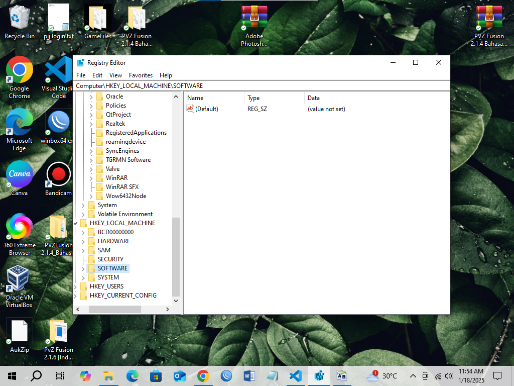
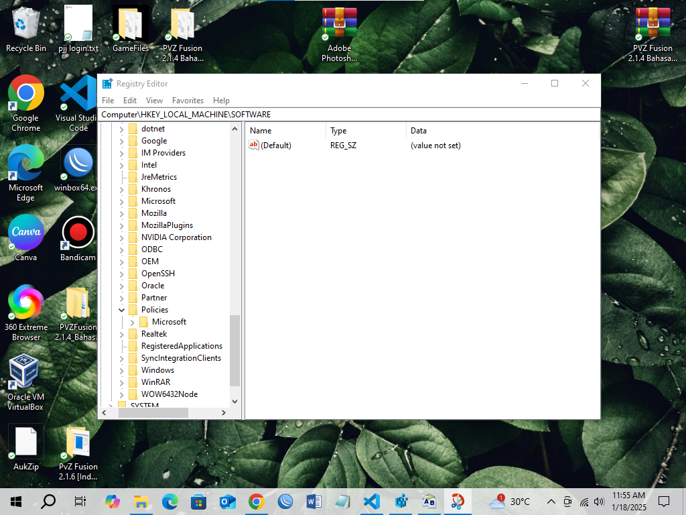
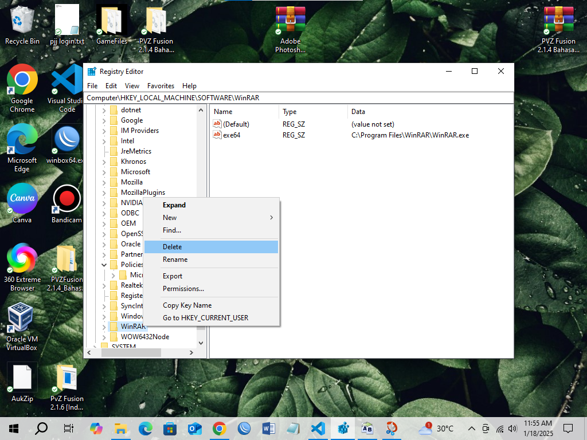
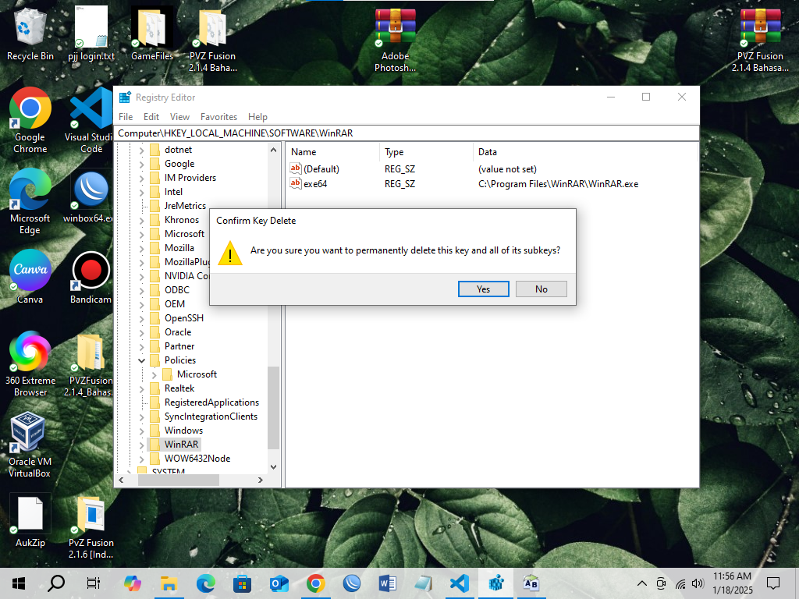
Buka browser anda ketik winrar.com
gulir ke atas